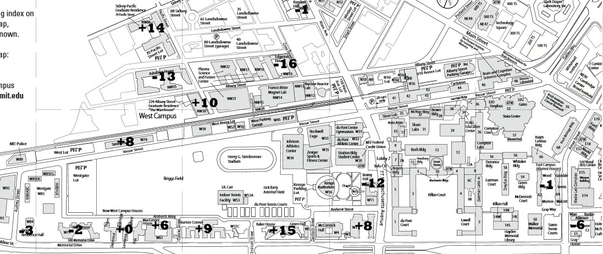

Author: Dan Katz
Each string of text is actually a multi-word clue, in which a consistent transformation has been applied to each word, and spaces have been removed. In addition, there is one extra letter inserted into each string. When each clue is solved, applying the same transformation to the answer to the clue gives the name or nickname of an MIT dormitory (either graduate or undergraduate).
BERLE = EARLY TELEVISION COMEDIAN FREQUENTLY CALLED UNCLE MILTIE
[shift third letter six places later in the alphabet, add a Y at the end]
BEXLEY = EAXLYY TEREVISIONY COSEDIANY FRKQUENTLYY CARLEDY UNILEY MIRTIEY
BEXLEY = EAXLYYTEREVISIONYCOSEDIANYFRKQUE(S)NTLYYCARLEDYUNILEYMIRTIEY
TANGO = PASSIONATE ARGENTINE DANCE THAT PROVERBIALLY TAKES TWO TO EXECUTE
[remove last letter]
TANG = PASSIONAT ARGENTIN DANC THA PROVERBIALL TAKE TW T EXECUT
TANG = PASSIONAT(H)ARGENTINDANCTHAPROVERBIALLTAKETWTEXECUT
DONNER = REINDEER OR SUPERMAN DIRECTOR RICHARD
[replace first letter with previous letter in alphabet, and then add surname of
Liz Taylor husband to beginning]
BURTONCONNER = WILDINGQEINDEER HILTONNR FORTENSKYTUPERMAN WARNERCIRECTOR FISHERQICHARD
BURTONCONNER = WILDINGQE(I)INDEERHILTONNRFORTENSKYTUPERMANWARNERCIRECTORFISHERQICHARD
BARKER = PREVIOUS HOST BOB FROM GAME SHOW THAT FEATURES PLINKO
[remove third letter]
BAKER = PRVIOUS HOT BO FRM GAE SHW THT FETURES PLNKO
BAKER = PRVIOUSHOTBOFRMGAESHWTHTFET(F)URESPLNKO
ROSE = LADY SHARING HOUSE WITH DOROTHY BLANCHE AND SOPHIA
[add NI at end, and then move first two letters to end in reverse order]
SENIOR = DYNIAL ARINGNIHS USENIOH THNIIW ROTHYNIOD ANCHENILB DNINA PHIANIOS
SENIOR = DYNIALARINGNIHSUSENIOHTHNIIWROTHYNIODANCH(T)ENILBDNINAPHIANIOS
EDGAR = AWARD CLAIMED BY THE CHATHAM SCHOOL AFFAIR
[Change all A's to E's, add a unit of measurement at the end]
EDGERTON = EWERDPOUND CLEIMEDYARD BYOUNCE THEFURLONG CHETHEMMETER SCHOOLACRE EFFEIRLITER
EDGERTON = EWER(T)DPOUNDCLEIMEDYARDBYOUNCETHEFURLONGCHETHEMMETERSCHOOLACREEFFEIRLITER
NEAT = LIKE ALCOHOLIC DRINKS SERVED WITHOUT ICE CUBES
[replace third letter with an X]
NEXT = LIXE ALXOHOLIC DRXNKS SEXVED WIXHOUT ICX CUXES
NEXT = LIXEALXOHOLICDRXNKSSEXVEDWIXHO(H)UTICXCUXES
ACTOR = MALE WHO PERFORMS WITH DRAMASHOP FOR INSTANCE
[Replace third letter with a member of the Brady Bunch, add an M before the first letter]
MACGREGOR = MMACINDYE MWHJAN MPEBOBBYFORMS MWIPETERH MDRCAROLMASHOP MFOCINDY MINMARCIATANCE
MACGREGOR = MMACINDYEMWHJANMPEBOBBYFOR(I)MSMWIPETERHMDRCAROLMASHOPMFOCINDYMINMARCIATANCE
EARDRUMS = STANDARD NICKNAME IDENTIFYING TYMPANIC MEMBRANES
[replace third letter with next two letters in alphabet, replace fourth letter with previous
letter in alphabet, replace fifth and sixth letters with a single A, insert PU before last letter]
EASTCAMPUS = STBCMARPUD NIDEJAMPUE IDFGMAFYINPUG TYNOOAIPUC MENOAANEPUS
EASTCAMPUS = STBCMARPUDNIDEJAMPUEIDFGMAFYINPUGTYNOOAIP(S)UCMENOAANEPUS
FLEW = TRAVELED THROUGH THE AIR LIKE AIRPLANES AND BIRDS
[remove first letter, shift new first letter two positions later in the alphabet]
NEW = TAVELED JROUGH JE KR KKE KRPLANES PD KRDS
NEW = TAVELEDJROUGHJEKRKKEKRPLAN(M)ESPDKRDS
WARHORSE = TONY WINNING VIVIAN BEAUMONT THEATER PRODUCTION WITH EQUINE PUPPETS
[change any second occurrence of a letter to U, add E after third letter]
WAREHOUSE = TONEY WINEUUNG VIUEUAN BEAEUMONT THEEAUUR PROEDUCTIUN WITEH EQUEINU PUUEPETS
WAREHOUSE = TONEYWINEUUNGVIUEUANBEAEUMONTTHEEAUURPROEDUCTIUNWITEHEQUEINUPUUE(E)PETS
SHADOW = CALDECOTT MEDAL WINNING MARCIA BROWN BOOK FROM THE EIGHTIES
[shift third letter to beginning, add N to the end]
ASHDOWN = LCADECOTTN DMEALN NWININGN RMACIAN OBRWNN OBOKN OFRMN ETHN GEIHTIESN
ASHDOWN = LCADECOTTNDMEALNNW(S)ININGNRMACIANOBRWNNOBOKNOFRMNETHNGEIHTIESN
MONDAY = TWENTYFOUR HOUR PERIOD THAT GARFIELD COMPLETELY DESPISES
[reverse entire word except for the middle two letters, shift new first letter seven places earlier in the alphabet]
RANDOM = KUOFTYNEWT KOUH WORIEP MHAT WLEFIRAG RLETLEPMOC LESPISED
RANDOM = KUOFTYNEWTKOUHWORIEP(S)MHATWLEFIRAGRLETLEPMOCLESPISED
SPECIFIC = HAVING BEEN DETERMINED WITHOUT AMBIGUITY THROUGH PRECISE DETAIL
[replace third letter with an A, add the name of an organ without its first letter after the first letter]
SIDNEYPACIFIC = HTOMACHAAING BUNGEAN DEARTEAERMINED WIVERIAHOUT ARAINMAIGUITY TANCREASHAOUGH PALLBLADDERRACISE DPLEENEAAIL
SIDNEYPACIFIC = HTOMACHAAINGBUNGEANDEARTEAERMINEDWIV(A)ERIAHOUTARAINMAIGUITYTANCREASHAOUGHPALLBLADDERRACISEDPLEENEAAIL
MASH = WARTIME SITCOM INSPIRED BY ALTMAN FILM
[replace next-to-last letter with a word for "see" starting with that letter]
MASEEH = WARTIMARKE SITCOBSERVEM INSPIREYED BEHOLDY ROBERECOGNIZET ALTMASCERTAINN FILOOKM
MASEEH = WARTIMARKESITCOBSERVEMINSPIREYEDBEHOLDYRO(G)BERECOGNIZETALTMASCERTAINNFILOOKM
TIMON = MEERKAT WHO SINGS HAKUNA MATATA WITH PUMBAA
[Shift first letter one place backward in the alphabet, double the third letter, add an S to the end]
SIMMONS = LEEERKATS VHOOS RINNGSS GAKKUNAS LATTATAS VITTHS OUMMBAAS
SIMMONS = LEEERKATSVHOOSRINNGSSGAKKUN(E)ASLATTATASVITTHSOUMMBAAS
The extra letters in the string spell SHIFT THIS MESSAGE. The image in the puzzle can be superimposed onto an MIT map so that the modifiers correspond to the dorms from the puzzle. Each modifier can be used to shift the corresponding extra letter:

Bexley: S - 12 = G
Tang: H - 3 = E
Burton-Conner: I + 9 = R
Baker: F + 15 = U
Senior: T - 6 = N
Edgerton: T - 16 = D
Next: H - 2 = F
Macgregor: I + 6 = O
East Campus: S - 1 = R
New: M + 0 = M
Warehouse: E + 10 = O
Ashdown: S - 13 = F
Random: S - 1 = R
Sidney-Pacific: A + 14 = O
Maseeh: G + 8 = O
Simmons: E + 8 = M